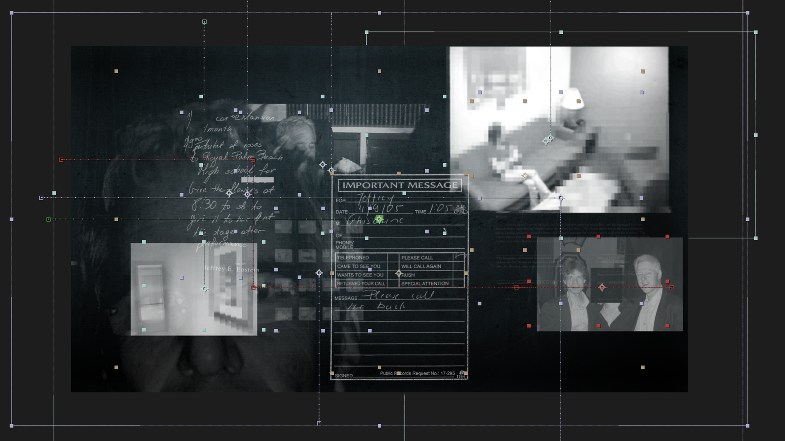
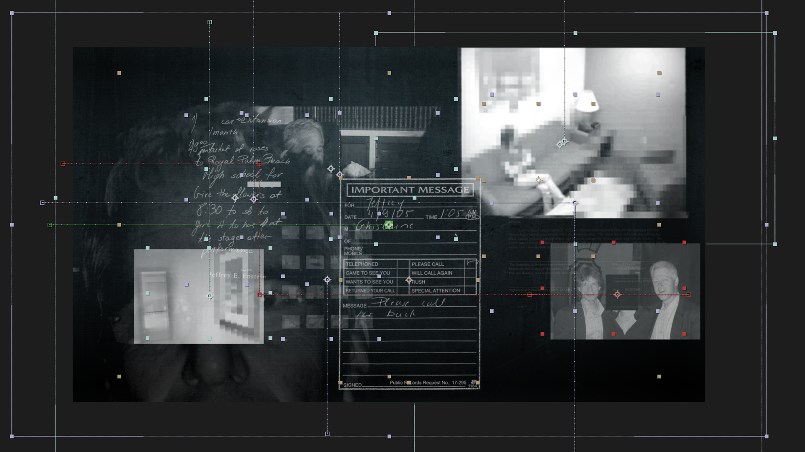

The Epstein Files.
This explainer explores the high-stakes release of the first batch of Epstein files by the DOJ, a story built around a vast archive of documents, images, and videos. To reflect the gravity of the information, I developed a mysterious, investigative visual language.
Using dark, moody tones, inverted typography, and vintage film-grain textures, the design leans into a sense of secrecy and unease, while unifying a wide range of media into a cohesive look.
Operating in broadcast television means tight, unmovable deadlines, I completed the full design, integration, and approval process in just three hours. This project aired the same day on 9News, reaching an audience of 1.39 million viewers, and later accumulated an additional 13,000 views on the 9News YouTube channel.
Credits
Company: 9News
Motion Design & Art Direction: Helen Wang
Producer: Amber Cunneen
Reporter: Reid Butler
Software: After Effects, Photoshop, Media Encoder
 
